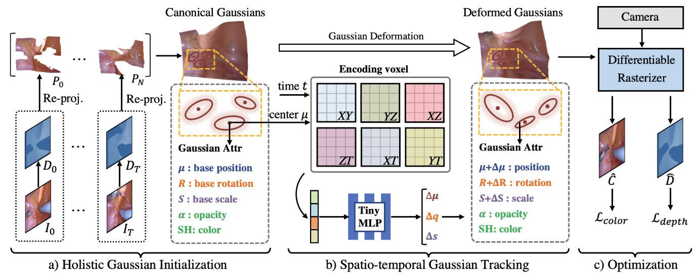
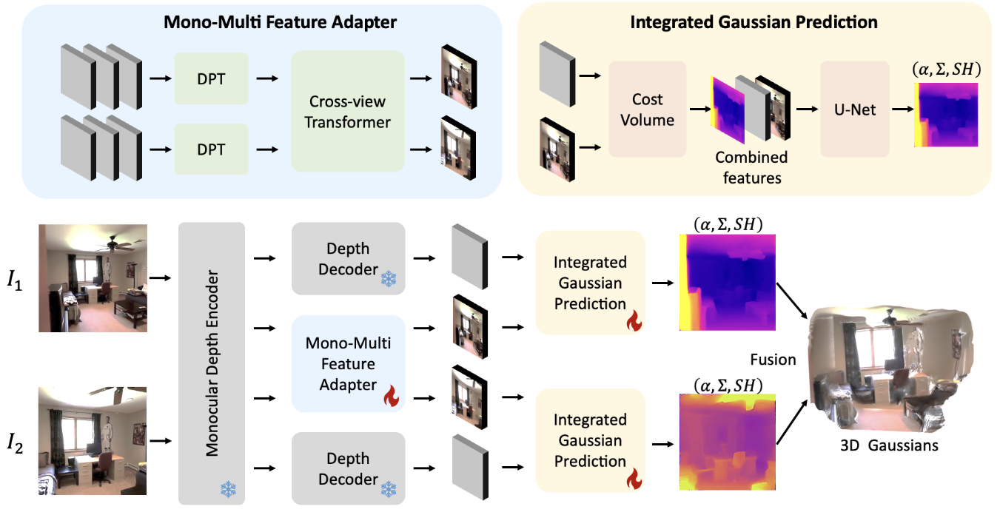
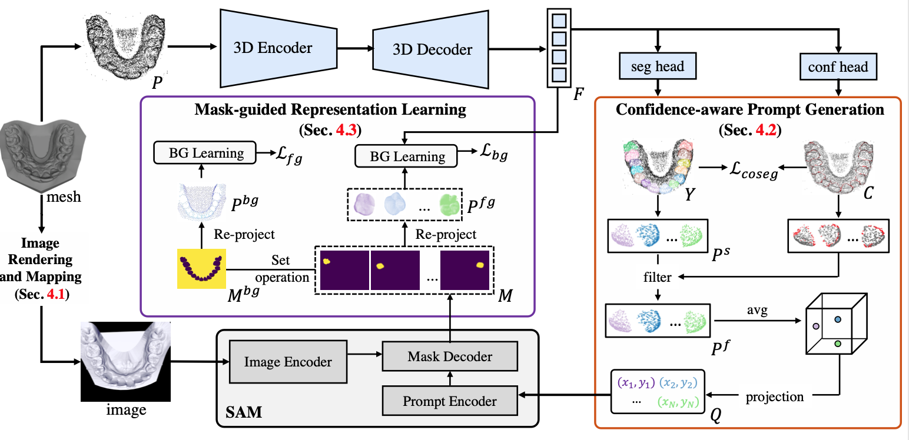
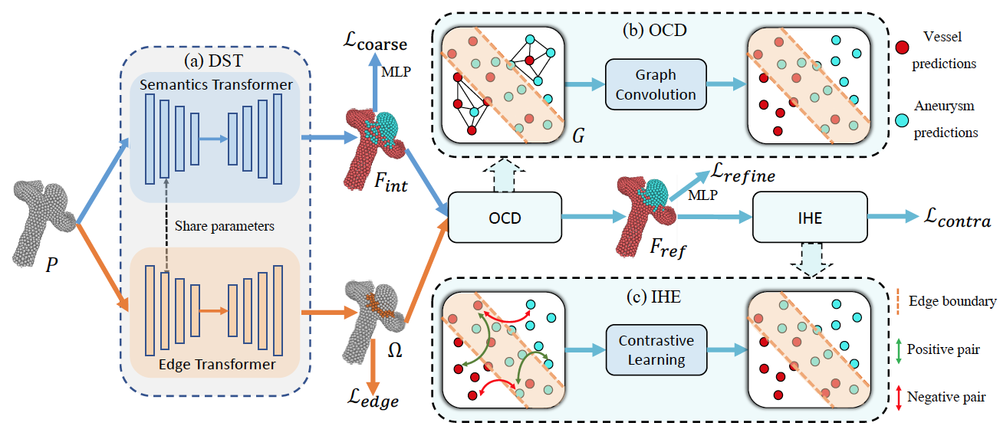
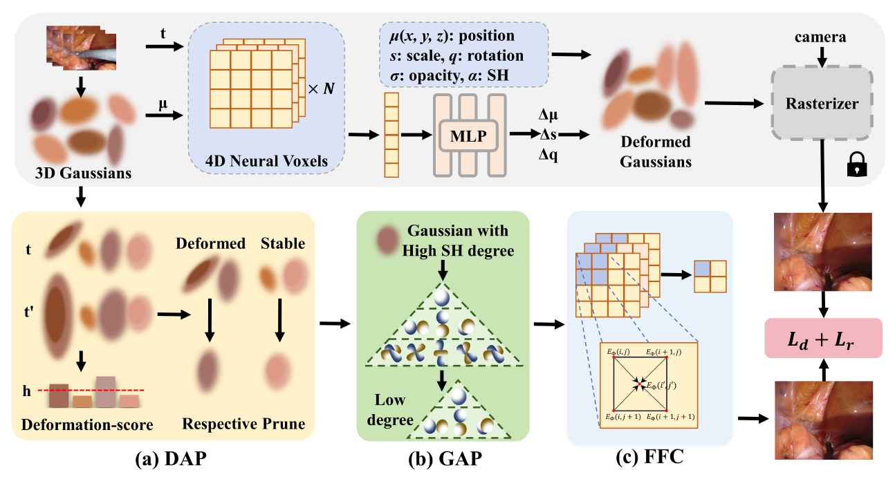
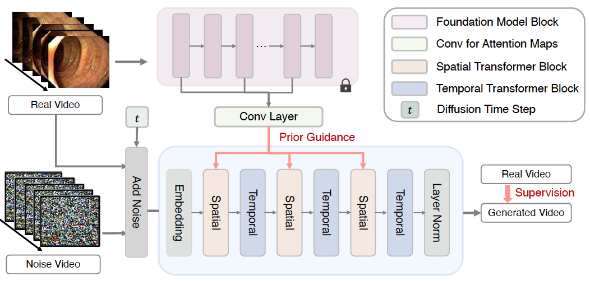
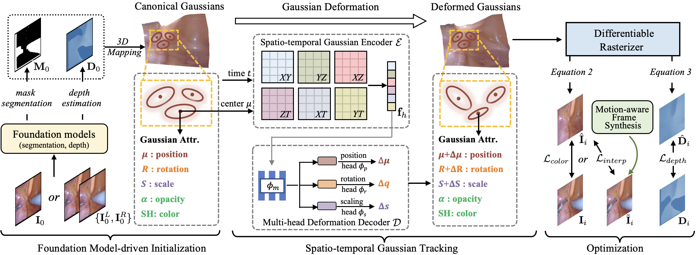
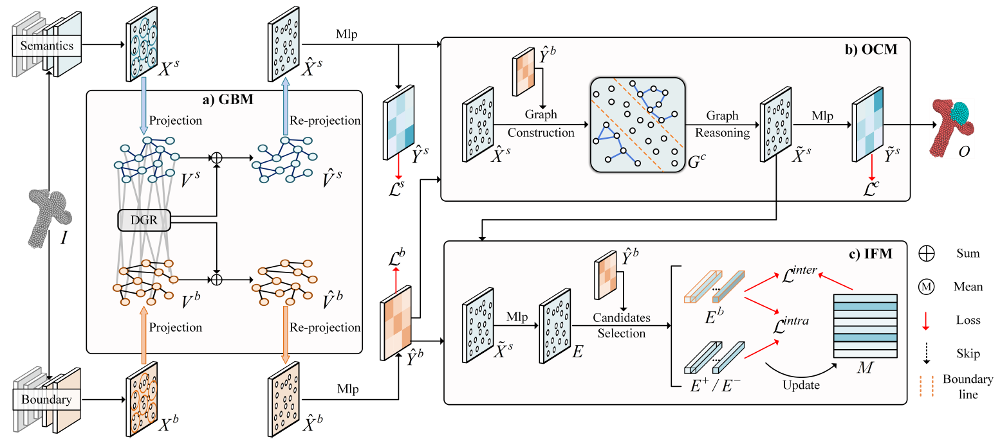
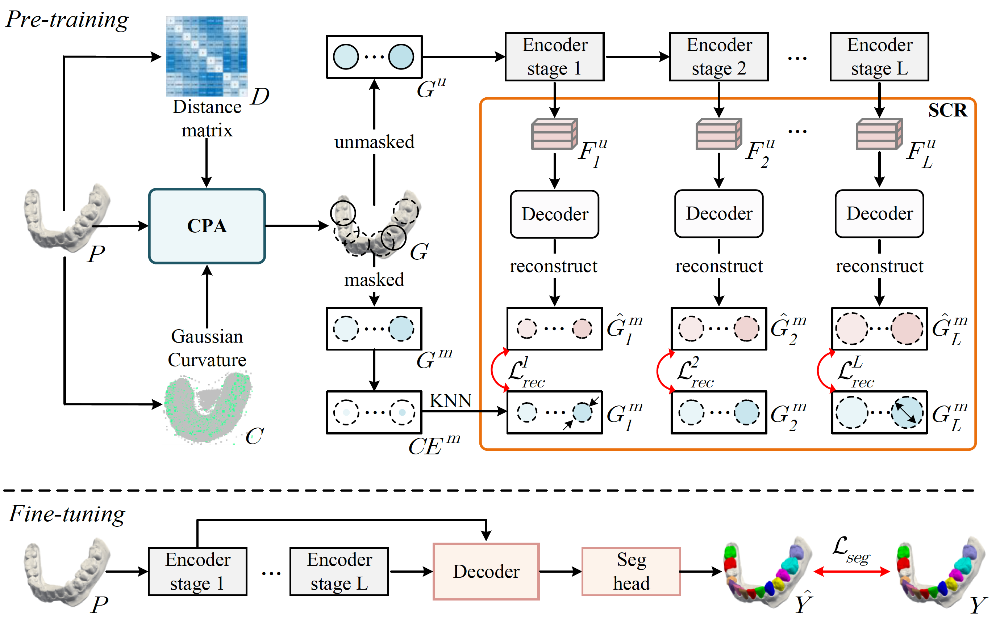

Yifan LiuPh.D. Candidate
Department of Electronic Engineering, |
 |
About Me
I am currently a third year (2023.01-) Ph.D. student in the Department of Electronic Engineering, Chinese University of Hong Kong (CUHK), supervised by Prof. Yixuan Yuan. Before that, I received B. Eng. degree in Electronic Information Engineering from the Huazhong University of Science and Technology (HUST) in 2021.
Research Highlights
I am broadly interested in building powerful, efficient, and robust intelligent systems that are capable of perception, generation, and interaction with the real world.
My current research highlights the following perspectives:
[02/2025] Our paper MonoSplat is accepted by CVPR'25.
Preprint:
EndoGaussian: Gaussian Splatting for Deformable Surgical Scene Reconstruction
Conference:
MonoSplat: Generalizable 3D Gaussian Splatting from Monocular Depth Foundation Models
When 3D Partial Points Meets SAM: Tooth Point Cloud Segmentation with Sparse Labels
Edge-oriented Point-cloud Transformer for 3D Intracranial Aneurysm Segmentation
LGS: A Light-weight 4D Gaussian Splatting for Efficient Surgical Scene Reconstruction
Endora: Video Generation Models as Endoscopy Simulators
Journal:
Foundation Model-guided Gaussian Splatting for 4D Reconstruction of Deformable Tissues
GRAB-Net: Graph-based Boundary-aware Network for Medical Point Cloud Segmentation
Geo-Net: Geometry-Guided Pretraining for Tooth Point Cloud Segmentation
Haihang Scholarship, 2020
Self-Reliance Scholarship, 2019-2020
Scholarship of Academic Excellence, 2017-2020
Outstanding Graduates of Huazhong University of Science and Technology, 2021
ENGG1130: Multivariable Calculus for Engineers, 2023 Spring, CUHK.
ENGG2760: Probability for Engineers, 2023 Fall, CUHK.
ELEG4512: Digital Image Processing, 2024 Spring, CUHK.
Conference Reviewer: ICCV, CVPR, ICLR, ECCV, ACM MM, ECAI, 3DV, MICCAI.
Journal Reviewer: TMI, TCSVT
News
[02/2025] Our paper EndoGaussian is accepted by TMI'25.
[01/2025] Our paper InstantSplamp is accepted by ICLR'25.
[01/2025] Our paper Hide-in-Motion is accepted by ICRA'25. Congrats to Hengyu.
[01/2025] Our paper ConcealGS is accepted by ICASSP'25.
[12/2024] Our paper U-KAN is accepted by AAAI'25.
[06/2024] Our LGS, Endora, and EndoSparse are accepted by MICCAI'24.
[05/2024] Our paper SAMTooth is accepted by MICCAI'24 (early accept, 11%).
[06/2023] Pass the Ph.D. Qualify Examination.
[05/2023] Our paper TGMA is accepted by MICCAI'23 (early accept, 14%).
[03/2023] Our paper GRAB-Net is accpeted by IEEE TMI'23. (IF. 11.037).
[06/2022] Our paper EPT-Net accepted by MICCAI'22 (early accept, 14%).
[06/2021] I graduate from the School of EIE in HUST and receive B.Sc. degree.
Selected Publications (Full list at here)

Yifan Liu*, Chenxin Li*, Chen Yang, Yixuan Yuan.
arXiv preprint 2024
[Paper] [Code] [Project]

Yifan Liu, Keyu Fan, Weihao Yu, Chenxin Li, Hao LU, Yixuan Yuan.
IEEE/CVF Conference on Computer Vision and Pattern Recognition (CVPR 2025)
[Paper] [Code]

Yifan Liu, Wuyang Li, Cheng Wang, Hui Chen, Yixuan Yuan.
International Conference on Medical Image Computing and Computer Assisted Intervention (MICCAI 2024, early accept)
[Paper] [Code]

Yifan Liu, Jie Liu, Yixuan Yuan.
International Conference on Medical Image Computing and Computer Assisted Intervention (MICCAI 2022, early accept)
[Paper] [Code]

Hengyu Liu*, Yifan Liu*, Chenxin Li*, Wuyang Li, Yixuan Yuan.
International Conference on Medical Image Computing and Computer Assisted Intervention (MICCAI 2024)
[Paper] [Project] [Code]

Chenxin Li*, Hengyu Liu*, Yifan Liu*, Brandon Y. Feng, Wuyang Li, Xinyu Liu, Zhen Chen, Jing Shao, Yixuan Yuan. (* indicates equal contribution)
International Conference on Medical Image Computing and Computer Assisted Intervention (MICCAI 2024)
[Paper] [Code] [Project]

Yifan Liu, Chenxin Li, Hengyu Liu, Chen Yang, Yixuan Yuan.
IEEE Transactions on Medical Imaging (IEEE TMI),2025.
[Paper] [Code]

Yifan Liu, Wuyang Li, Jie Liu, Hui Chen, Yixuan Yuan.
IEEE Transactions on Medical Imaging (IEEE TMI),2023.
[Paper] [Code]

Yifan Liu, Xinyu Liu, Chen Yang, Hui Chen, Yixuan Yuan.
Journal of Dental Research (JDR),2024.
[Paper] [Code]
Selected Awards
Teaching
Professional Activities